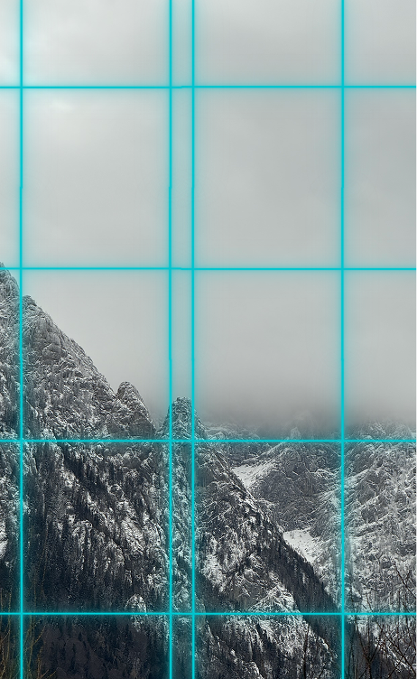

It is summer in Zimnygrad.
Saying that sounds like some kind of sick joke. Outside, the great storm never ends. I can hear the muffled wind through the glass walkways from my Bloc to my subteren on the way to work. Yet inside my Bloc, the climate panels of the wall exert a "warm" breeze, and for three months the harsh white lights soften to a honey colored glow. They simulate a season that no longer exists.
When I was very young, before the Freeze, it was still relatively cold, never going above -1 C even on a summer's day. Once a year, however, as a reward for his hard work, my father would be given a week in Vara. This was a biodome made of glass, designed to replicate a part of the planet that no longer existed. There was sand and an artificial beach. I lived by the coast as a child, a time when the water wasn't frozen yet, but here the water was a perfect warmth. It felt like a hot bath on my skin. The rich had homes near the dorm and could visit whenever they pleased, but to the rest of us, it was a gift.
The biodomes all collapsed after the Freeze, traditional glass wasn't enough for the winds. Now the powerful no longer go to summer, summer comes to them.
I live in the summer at the moment. My apartment smells faintly of "cut grass" and "ocean breeze." I cannot even begin to fathom how expensive these pods are, but they get sent for free as a benefit of living in Bloc 3. Viktor's higher-ups in Bloc 2 even have trees within their apartments growing fresh fruit during this season. To pass the time on my days off, I go down to the pool on the 10th floor, swimming in the recycled water, lit to be an artificial blue.
——
Yesterday, Viktor took me to Sector 4. A dinner in Gaura, a petrol crystal mining town on the verge of total ruin. I'm not there for dinner, but for a broadcast to promote the growth of the town. The reality is that it's a cemetery disguised as a booming village.
The people in the town stand in line daily for their government-issued nutritional grain packs, a brown substance that supposedly tastes something like dust, according to notes I've seen from other sisters. Looking around, you may not notice at first, but there is a glimmer in the air, and when you look at the people, a fine, teal powder coats their clothing. They call it PD, also known as petrol dust. It's beautiful, but it's killing them.
The town is a hub for extracting petrol crystals. Most families here work as engineers fixing the numerous technodrills that dig into the underground crystal walls. The byproduct of this is the Gaura cough, you hear everywhere, a guttural, wet rasp, sounding like a man trying to cough out cut glass from his lungs. It's because the petrol crystals are actively crystallizing in their lungs. The fine dust in the air is absorbed in the lungs, causing them to expand until the entire lung becomes crystallized. One would not wish this on their worst enemy, but for me, I wish for something even more painful to happen to the dictator.
Viktor and I are put into a room with a large glass wall. The cameras carefully avoid the ever-falling haze of teal dust falling outside. His speech is a perfect work of fiction. He promises filtration and guarantees of care, all while denying any neglect of the government. His words are so blatantly false that it feels like a test of faith, but his smile is the selling point. He has the smile of a kind man, one hard to find in this cold world, and it is utterly convincing. I think this was the first time I realized Viktor's true power, he could make you believe that poison was a form of progress and that a cough was simply the sound of hard work.
I stood by him smiling, the picture of a perfect Zimnygrad wife. As the video came to its end, I looked out of the glass room and watched the people looking at us. The look in their eyes was the same as my own, exhaustion. We were both being used as transactions.
For your records:
File one: Zimnygrad only has 10 active train lines within the city perimeter. Cross-referencing logs from PF (pre-freeze), there are 5 additional, unaccounted-for lines. These appear to be tunnels from the old magnetized metro system, sealed and omitted from official public records. Looking at the image of the unaccounted tracks, it appears they may still be in use, but for what and by whom.
File two: Information on the disease in Gaura: Part of a diary written by a physician suffering from the illness.
The crystallization of the lungs is a slow, painful process. With each cough, more and more escape from the lungs, cutting the throat but releasing more moisture to continue growth. There is no cure. The only solution is the prevention of long-term exposure to the mining area. Continuing mining is to give yourself a dose of a painful death knowingly. Our ethical recommendation is to cease all human-led operations. - Dr. Grunitzky
Note: Recommendation rejected. The project is now concluded. All data should be incinerated, and all staff members must report to mandatory meetings with the Dictator. Please send our regards to the families.


view on the way to Gaura, the gates to keep us warm
False Summer
14 - 06 - 10 P.F
28369067813